Software Engineer
Zachary Aries
Work Experience
Amazon
Frontend Engineer II
2021 → Present
Responsibilites
- Create peer reviewed design documents ensuring scalable & well designed features
- Design and implementing key features requested by product
- Implement test coverage using Jest and Playwright for unit and E2E testing
- Mentoring team members
Key Deliverables
- Implemented timeline feature to create and control animations
- Typescript, React, Redux, Redux Saga, DynamoDB, Web Animation API
- High focus on render performance, code organization & expandability
- Delivered large feature set outlined by product, users and UX
- Implemented fronted error logging systems
- Typescript, React, Redux, Redux Saga, AWS Cloudwatch
- Created an error logging system that tracks, reports and alerts errors though AWS architecture
- Implemented on-call scripts to manage databases
- Typescript, DynamoDB
- Created several on-call scripts which allowed automatic database creation, duplication and deletion
- Included backup, parallelization & backoff algorithms
- Required to work in production on data sets in the hundreds of thousands
Critical Mass - Nissan North America
Tech Lead
2020 → 2021
Responsibilites
- Planning of project sprints, architecture, deliverables & development of interactive advertisement web application
- Managed client relations through project timelines by providing LOE’s and solution design for projects
- Managed several teams of direct reports through project lifetimes
- Managed direct reports achieve career goals with support and guidance
Key Deliverables
- Implemented Ariya pre-order website
- React, Node, AWS, Jenkins
- Created a vehicle customization platform which allows customers to build their custom Ariya and view it on a 3D turntable with cinematic cameras
- Lead to thousands of pre-purchase orders full-filled by dealers across North America
- Managed a team of ~10 developers, third party vendors, and key stakeholder requirements in order to meet a tight project deadline
Showpass
Software Engineer
2019 → 2020
Responsibilites
- Designed and implemented key features in a very fast paced environment
- Responsible for the front end team’s sprint progress
- Participated in the recruiting and hiring program
Key Deliverables
- Helped create, recruit and hire for Showpass' first internship program
- Filtered resumes, attended job fairs, selected and interviewed candidates to host our first summer internship program
- Designed and implemented venue seat selection feature
- AngularJS / Django / PostgreSQL
- Allowed users to view and select seats in venues of up to ~100,000
- Helped acquire many valuable clients who previously were unable to host their venue in our platform
CriticalMass - Nissan North America
Web Developer
2018 → 2019
Responsibilites
- Designed and implemented features against tight deadlines
- Helped interview for developer positions
Key Deliverables
- Helped create, recruit and hire for Showpass' first internship program
- Filtered resumes, attended job fairs, selected and interviewed candidates to host our first summer internship program
- NextGen Configurator POC
- React / Node.js / GraphQL
- Part of a PoC discovery team to flesh out the applications requirements, architecture and design decisions
- Implemented components, tests and page composition according to requirements
Profile
Software engineer with a major in computer science & concentration in software engineering. For 5+ years I have been delivering performant, scalable & accessible web applications. I am consistently looking to create a high impact on teams & produce the best possible product for users. I pride myself on my ability to learn quickly, understand the big picture & work with key stake holders to deliver results
Skills
- 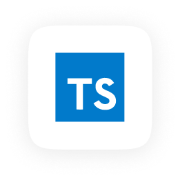
- 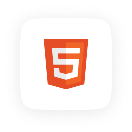
- 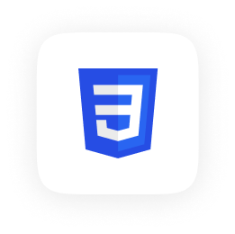
- 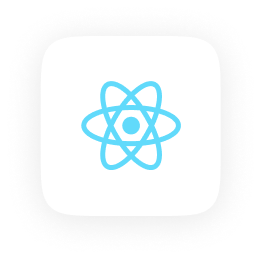
- 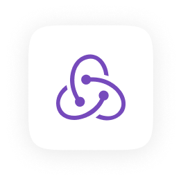
- 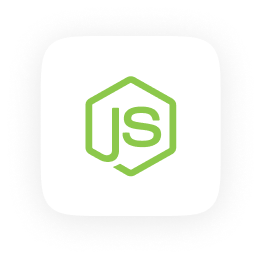
- 
- 
- 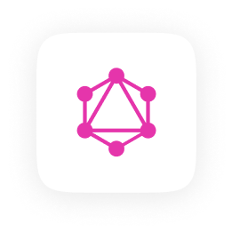
- 
- 
- 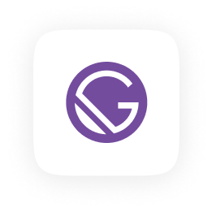
- 
- 
- 
- 